Menu lateral concentrava a navegação
Evidência
Os maiores volumes de cliques apareciam no menu lateral e na barra superior.
Interpretação
A Home era utilizada como passagem; os usuários chegavam procurando uma função específica.
FTD Educação · UX/UI
Transformando dados de comportamento em uma experiência orientada à ação.
FTD Educação · iônica · 2025–2026
Pesquisa comportamental · UX/UI · Desktop, tablet e mobile
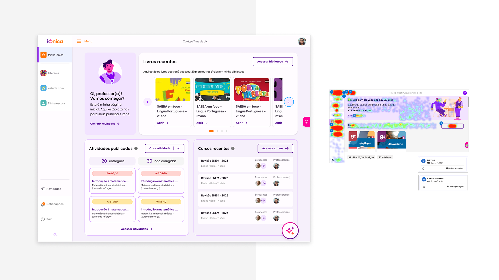
01
A Home da iônica reunia acessos para Biblioteca, Atividades, Cursos e ferramentas de inteligência artificial. Apesar da quantidade de recursos disponíveis, os dados mostravam que ela não era utilizada como o principal ponto de partida da plataforma.
A partir de apontamentos de CSAT, sessões de shadowing e mapas de calor, investiguei como professores e estudantes realmente navegavam pela experiência. A análise revelou uma diferença importante entre a estrutura da interface e o comportamento dos usuários: enquanto a Home apresentava conteúdos e comunicações, as pessoas chegavam à plataforma com tarefas específicas e procuravam o caminho mais rápido para executá-las.
Fui responsável por analisar as evidências, consolidar os padrões de comportamento, definir os direcionadores da nova experiência e criar os wireframes e as interfaces finais para desktop, tablet e mobile.
A proposta transformou a Home em um dashboard mais compacto e orientado à ação, priorizando conteúdos recentes, tarefas relevantes e próximos passos.
02
Diferentemente de um produto criado do zero, a evolução da Home precisava considerar comportamentos já estabelecidos, diferentes configurações institucionais e funcionalidades distribuídas por toda a plataforma.
A iônica já era um LMS em operação, com professores e estudantes de necessidades distintas. A Home concentrava funcionalidades importantes, o produto passava por evolução contínua e a estrutura precisaria continuar funcionando durante a transição para o LMS 3.0.
03
A Home concentrava funcionalidades importantes, mas os usuários frequentemente a ignoravam e recorriam diretamente ao menu lateral.
Baixa percepção de valor
Conteúdo relevante abaixo da primeira dobra
Destaques visuais com pouca interação
Dependência da navegação lateral
04
Atuei como UX Designer, com responsabilidade central sobre a pesquisa comportamental e a construção da experiência. O projeto teve colaboração de produto, conteúdo, design e desenvolvimento.
Investigação
CSAT, planejamento da análise, sessões no Microsoft Clarity e mapas de calor.
Síntese
Consolidação das evidências e identificação de padrões de comportamento.
Estratégia
Formulação de hipóteses e definição dos direcionadores da nova experiência.
UX
Reestruturação da arquitetura da Home e criação dos wireframes.
UI
Interfaces finais, componentes e revisão dos empty states.
Responsividade
Versões para desktop, tablet e mobile.
Entrega e evolução
Preparação para desenvolvimento e adaptação para a convivência com o LMS 3.0.
05
Nenhuma fonte foi interpretada isoladamente. O cruzamento entre percepção, comportamento observado e dados de interação ajudou a diferenciar problemas pontuais de padrões estruturais.
CSAT
Indicava percepções, insatisfações e expectativas relacionadas à Home.
Shadowing
Revelava como professores e estudantes realmente navegavam e quais caminhos priorizavam.
Mapas de calor
Mostravam a recorrência dos comportamentos por meio da concentração de cliques e da exploração da página.
06
Esses números representam a base da análise comportamental, não os resultados posteriores do redesign.
07
Evidência
Os maiores volumes de cliques apareciam no menu lateral e na barra superior.
Interpretação
A Home era utilizada como passagem; os usuários chegavam procurando uma função específica.
Evidência
Apesar da posição acima da dobra, o banner apresentava baixa interação.
Interpretação
Uma área valiosa da tela estava dedicada a uma comunicação pouco relevante para a rotina.
Evidência
Biblioteca e livros recentes apareciam repetidamente nos dois perfis.
Interpretação
Professores e estudantes queriam retomar materiais já conhecidos.
Evidência
Atividades, Cursos e próximas entregas recebiam pouca atenção.
Interpretação
A hierarquia escondia conteúdos potencialmente relevantes.
Evidência
Estados sem conteúdo ocupavam grandes áreas e não ofereciam ações seguintes.
Interpretação
A ausência de conteúdo era tratada como fim do fluxo.
Evidência
Diferentes recursos apareciam em pontos e chamadas distintas.
Interpretação
A dispersão dificultava a compreensão do ecossistema de IA.
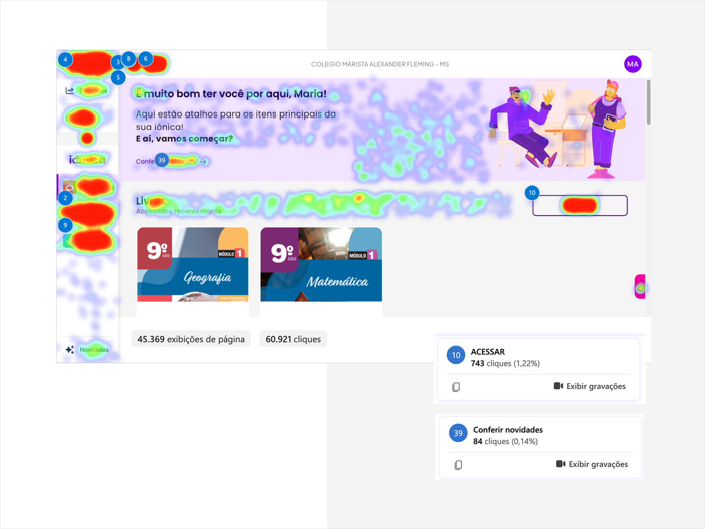
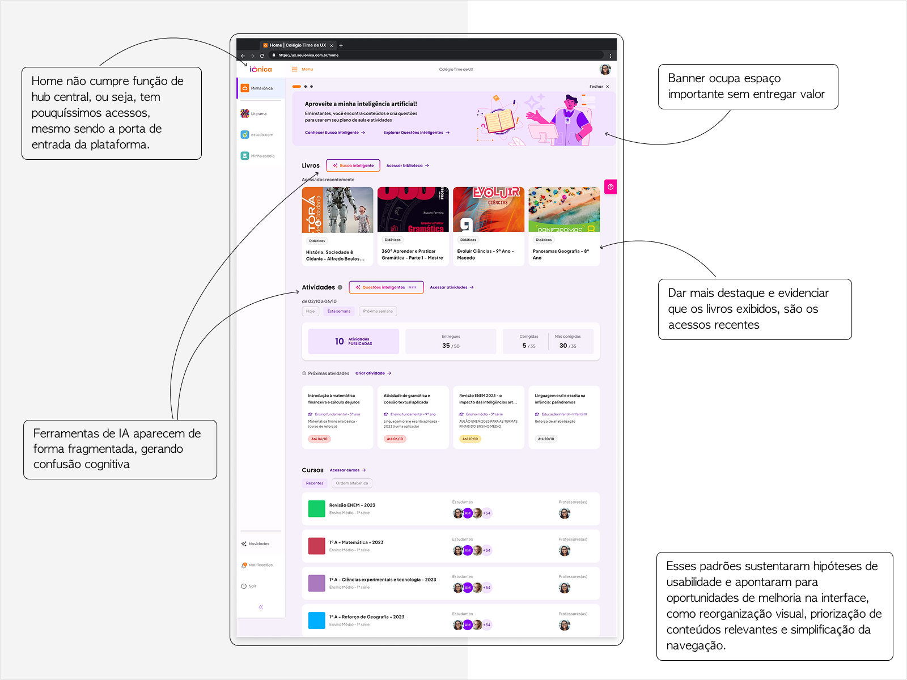
08
Padrões observados nas sessões e nos mapas de calor — não personas.
Professor
Estudante
09
O mesmo cruzamento de evidências foi aplicado a outras áreas do produto. Colocadas lado a lado — Home, Atividades, Minhas Questões e Cursos —, elas apontavam para a mesma leitura.
Os usuários apresentavam comportamento orientado à tarefa e buscavam executar ações rapidamente, com pouca exploração. Entretanto, diferentes áreas do produto ainda priorizavam organização e estrutura em vez de ação.
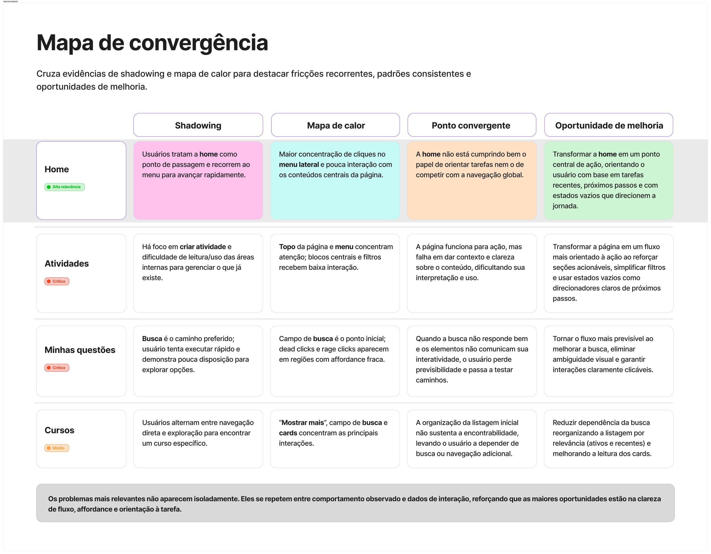
Atividades, Minhas Questões e Cursos aparecem aqui apenas como contexto da investigação comportamental. Cada uma teve seu próprio desdobramento, fora do escopo deste case.
10
A Home não estava alinhada ao modelo mental de usuários orientados à tarefa.
Consequências
11
Orientação à ação
Cada bloco deveria responder a uma tarefa ou próximo passo.
Relevância no primeiro scroll
O conteúdo mais importante deveria aparecer sem depender de rolagem extensa.
Continuidade
Livros e conteúdos recentes deveriam facilitar a retomada.
Clareza contextual
Títulos e microtextos deveriam explicar o que estava sendo apresentado.
Empty states acionáveis
A ausência de conteúdo deveria oferecer uma ação útil.
Adaptação por perfil
Professor e estudante deveriam receber hierarquias relacionadas às suas necessidades.
Menor dependência do menu
Tarefas recorrentes deveriam poder começar diretamente na Home.
12
A nova hierarquia não adicionava mais conteúdo. Ela reorganizava os elementos existentes a partir de relevância, frequência e contexto.
Professor
Estudante
13
Os wireframes traduziram os princípios em estrutura: módulos horizontais, conteúdo relevante já no primeiro scroll, CTAs diretos, menos áreas vazias e uma ordem definida pelas tarefas de cada perfil.
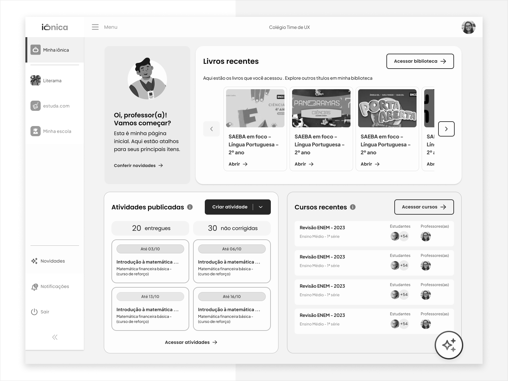
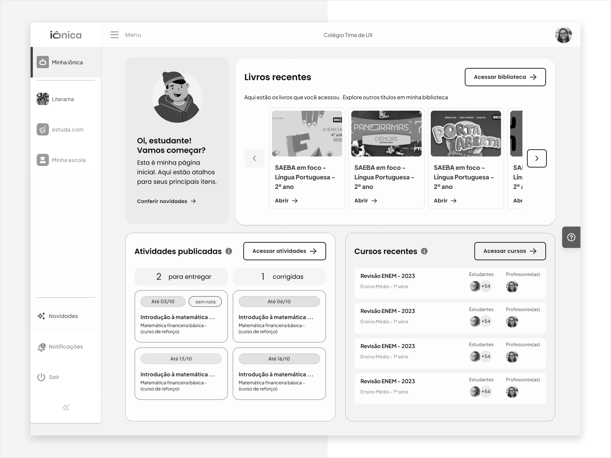
14
15
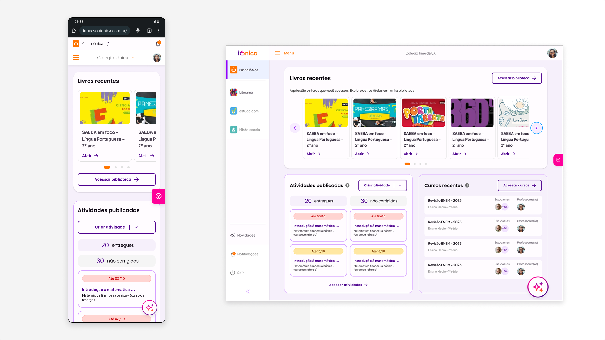
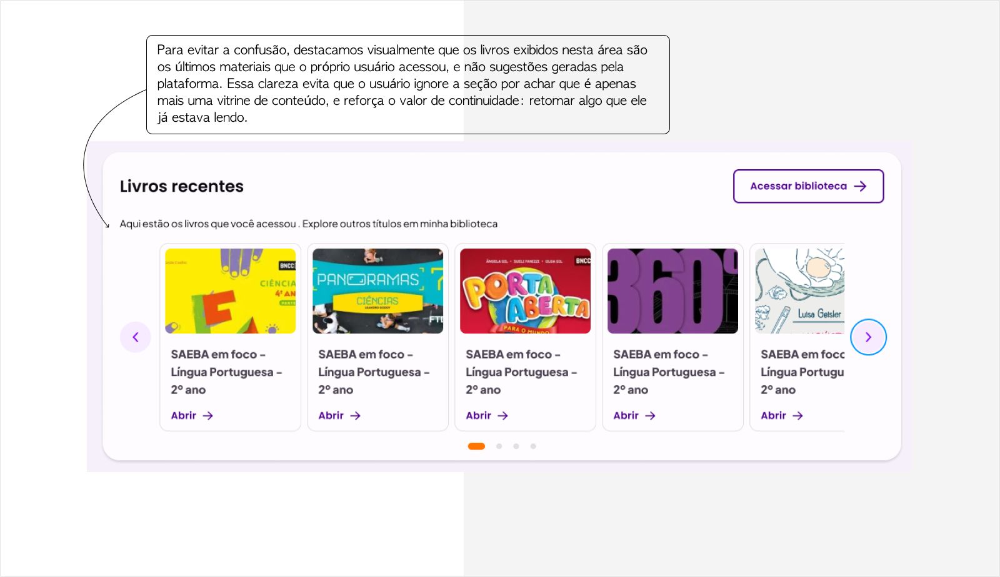
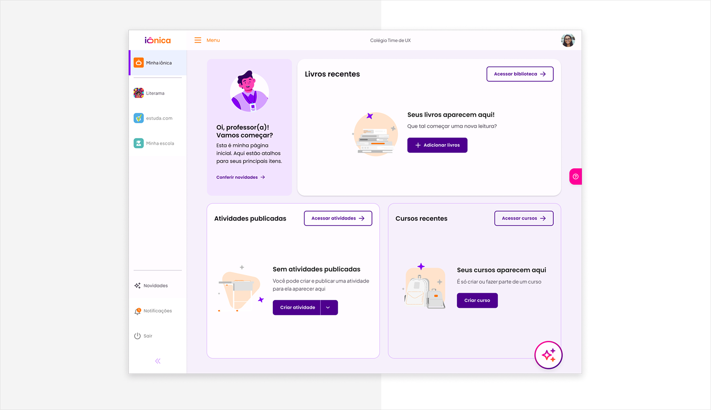
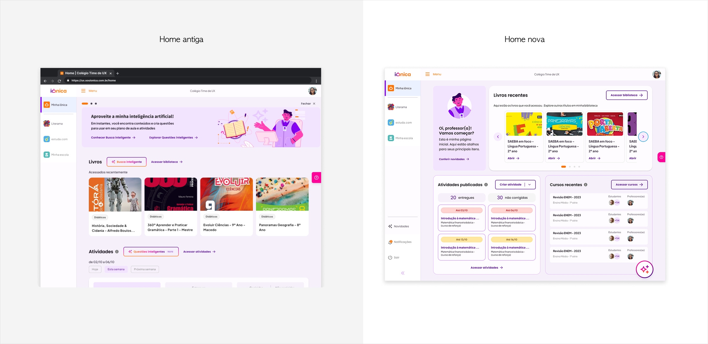
16
A nova Home não foi tratada como uma entrega isolada. A estrutura precisou continuar evoluindo para conviver com diferentes configurações do LMS e necessidades institucionais.
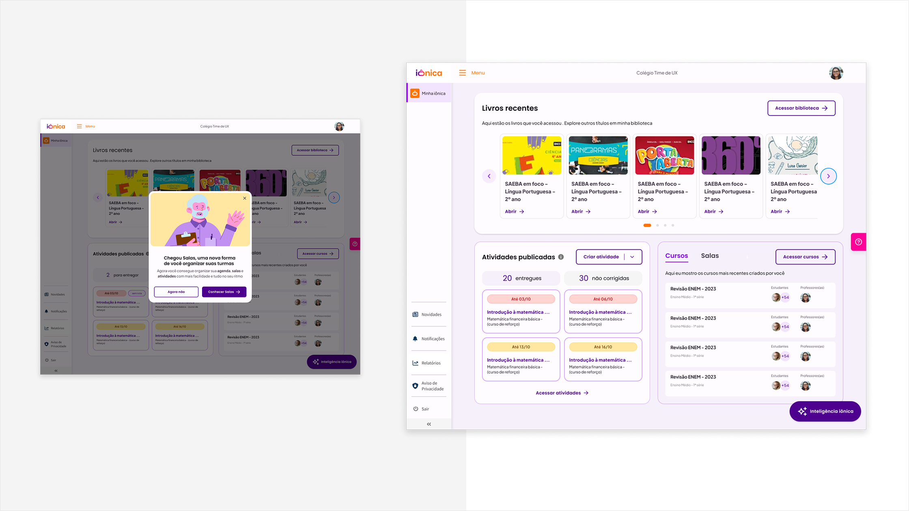
17
Após a implementação das mudanças, acompanhamos um aumento nos acessos e nas interações com a Home, indicando uma evolução em relação ao comportamento observado no início do projeto.
A nova experiência também foi muito bem recebida pelos stakeholders. A reorganização da hierarquia e a transformação da Home em um painel mais orientado à ação tornaram mais clara a função da tela inicial dentro da plataforma.
Embora os números detalhados e uma nova medição de CSAT não estejam disponíveis, o trabalho produziu um legado importante: os estudos de comportamento, os princípios e os direcionadores definidos para essa evolução serviram como uma das bases para a construção da Home da iônica V3 web.
Mais do que melhorar uma interface existente, o projeto ajudou a estabelecer uma nova compreensão sobre o papel da Home no produto — menos como uma vitrine de funcionalidades e mais como um ponto de partida contextual para as tarefas dos usuários.
Os dados detalhados do período não estão mais disponíveis; os resultados apresentados se baseiam no acompanhamento realizado após a implementação.
O que ficou
O projeto reforçou que elementos grandes e visualmente destacados podem permanecer irrelevantes quando não respondem às intenções reais dos usuários.
O cruzamento entre CSAT, shadowing e mapas de calor permitiu enxergar não apenas onde as pessoas clicavam, mas por que determinados caminhos se repetiam. A Home precisava deixar de ser uma vitrine de funcionalidades e assumir o papel de painel de ação.
Também aprendi que, em um produto vivo, a solução precisa ser flexível o suficiente para continuar evoluindo. Mais do que reorganizar uma página, o trabalho estabeleceu uma lógica para priorizar tarefas, conteúdos recentes e próximos passos.